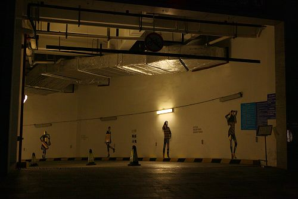

沉默日常。 @ Aug 17, 2011
废话满天飞的时代，沉默是最大贡献。（廖一梅）


废话满天飞的时代，沉默是最大贡献。（廖一梅）


好几次路过它，安静的阴凉处，只有它是紫色的，楚楚动人。
好多天过去了，它还是那么丰盈饱满，生命力极强，生存在炎热天气下。
受各位指教，才知道它叫紫叶酢浆草，原产南美巴西，是一种珍稀的优良彩叶地被植物。我国已成功引种。
最近买了几本书，其中一本是蔡蔡推荐的《遇见未知的自己》，这标题让我想起问问写的《遇见更小的我》。连续两个晚上看《天天向上》，不用动脑子，只需傻笑的节目。看到午夜12点洗澡睡觉。今晚阅读《遇见未知的自己》，书中有句话：“亲爱的，外面没有别人，只有自己。”而前几页的问题便值得人思考。
一位女性遇到一位老人，老人问：“你是谁？”“我叫李若菱。”
“李若菱只是你的名字，一个代号，”老人微笑着坚持，“我问的是‘你是谁’。”“我......”若菱困惑了，他到底想问什么？
“我在一家外企计算机公司上班，我是负责软件产品的营销经理。”若菱试着解释。“那也不代表你是谁，”老人再度摇头，“如果你换了工作，这个‘你是谁’的内容不就要改了吗？”
你是谁？

周日到达上海的下午是晴天，台风擦边而过去了山东。

从我们住的酒店窗户能看到浦东机场，夜晚，一切都是静止的。

除了外甥女的两大一小，三个箱子之外，还有她老爸一个小箱子，后备箱的空间很强大。所谓“儿行千里，母担忧。”机场出关门前，多少洒泪的亲人，父亲背过身去偷偷擦泪，母亲透过透明玻璃门牵挂地遥望排队出关的孩子。不是一副画面，还是一副又一副催人泪下的画面。和我家可爱的小朋友就此告别，明天凌晨1点到达美国。圣诞节再见，愿你比现在更加独立，坚强。

傍晚利用有限的三个多小时去新天地找“钲艺廊”，入手香魅瓷器若干。关注这家店有一段时间了，这次去才知道他们还经营家具、沙发、字画。这家店将古老的瓷器注入了时尚元素，看上它家一副画，有点小贵，要四千多，如果能给个优惠价就好了。我身后的二楼是个下午茶的好地方，遗憾时间太紧，逛完这家店即急急匆匆地乘地铁返回浦东机场。“钲艺廊”在上海有两间店：1、东平路7号；2、兴业路118号。提供给有兴趣的朋友。


车库入口的创意。

路过这间”七叶和茶“，好想进去悠闲地挑一个冰淇淋吃，可惜没有时间流连于此。暂且记录下来，待日后有机会再去。

外甥女下午来看望两只狗狗，后天的飞机飞美国，据说她所在的学校是全美美女最多的大学。我们正为梅超风可能会影响行程而担心，那可是2级台风啊。不过晚上有消息说台风没有登陆浙江，改北上了。那么，明天我们是不是可以顺利抵达上海呢？

早晨上班路上接到货运电话，询问公司地址。说有家具发货过来。这无疑令我之前低落的心情为之振奋。要知道，我可还没汇货款过去呢。。。
中午运回家，当即挥汗如雨地在院子里拆包装，边拆边骂，这包装也忒结实了，木框接缝处打了钉子，用了羊角锤和一字批叮叮咚咚一阵猛砸，衣服从里湿到外。期间，羊角锤套柄脱落，靠，made in china出口产品果真没好货。
我拆啊拆啊拆的，拆出个尤物来。摆在我家毫无情调的书房里，立刻满壁生辉。你不知道多了些什么，但的确让书房有了一些气质。我会好好对你的，可爱的椅子。
如果这椅子恰好合您的审美需求，我愿意与您分享“古奇·高”设计哦。这里有一些梵几家具在各位主人家里的使用状态图集，分享之。不过，在所有家具中，貌似俺们选的进口黑胡桃木的色泽最特别。


最近出差都是在处理麻烦事儿，由此发现现在的工作就是不断地解决问题，然后不断有问题出现。这周有四件让人头大的问题，解决了三件，还剩一件。俺们是个心里放不下事情的人，有事情一定要解决了，才能轻松地吃喝玩乐。每当头大时，没勇气拿起电话，只能写邮件，书写才能让自己不失去理智和礼貌。摆道理讲事实，受不了自己这幅德性。连公司都强势不了的对方，也只能谦虚谨慎。乐观地看，遇到问题才有经验的积累，悲观地想，每天从早到晚，坐在办公桌前处理一封又一封令人头疼的邮件，日复一日没完没了，大热天的出差，这么做的意义是什么？对于刚工作的人，这些可能是一种自我挑战与成长，可是俺们都一把年纪了，鄙视理想教育，其实工作本身并不复杂。
公司进了一些海归，不同公司的海归，范儿也不同。一公司的海归们时常在电梯里单臂架起笔记本电脑，边谈论着国内可乐价格昂贵边缅怀国外可乐的好。俺们公司的海归们特朴实，上班着装特随意，被同事冲两句，心理特强壮，没事似的。常常加班毫无怨言。以小人之见，花那么多钱出去留学，现在回来做这么份鸟工作，当初就甭出去了。

百态众生下有时候难免疑惑，那些个把自己当个角色的人，那些个夸夸其谈的人，那些个摆出教父教母姿态的人，（猪鼻子里插葱）到底是牛X？还是傻X？想起孟非对《非诚勿扰》一期的男嘉宾说：“有些人讲话深入浅出，有些则是浅入深出，还有的是浅入浅出。”男嘉宾的工作是战略规划师？咨询师？工作不比别人复杂，也高级不到哪儿去。拿腔捏调，颇多修饰词，逻辑曲折，其实透过表面看本质，就那么点儿破事，您忽悠谁呢？
土豆生病10天，第五天因前家医院的治疗对其病症没有效果，于是转院到问问推荐的这家医院。治疗到第四天已能喂食少许狗粮，三五颗狗粮，对于已禁水禁食9天的土豆来讲，都有可能产生剧烈的疼痛，奇迹的是它既没吐也未腹泻，精神食欲都很旺盛。无论医生还是我们，担心仍然存在，小心翼翼地观察，祈望。
从上周一开始，每天我都必须到宠物医院接送土豆，周末则完全泡在医院里。这的确是家五星级宠物医院，是我到过的管理服务较为规范的医院。医生基本是畜牧或相关专业硕士生，或者在行业里一步一步上升到医生岗位的专本科生。我发现每位宠物医生心中都有一个共同的梦想，那就是将来开一家自己的宠物诊所。医院里的员工很年轻，问他们为什么会选择这个专业，回答也惊人地一致：＂爱小动物。＂的确，如果不是真心喜爱，还蛮难有耐心坚持下去。除了技能考核外，还有客户的评价也会作为他们收入考核标准之一。也就是说既要医术好，同时服务态度要更好。且他们每个人一周有三天必须从早九点工作到晚九点，其他时候下午5：30下班。能值夜班的年轻医护人员会是医院较器重的员工，夜班时有急诊就看，没急诊可继续休息，早晨为给主管好印象，会和其他人一样上班，但生物钟紊乱，也可能会内分泌失调。
从这些年轻医护人员的处境来看，我们工作的辛苦似乎算不得什么。他们更珍惜自己的工作，在工作时间里甚至看不到年轻人应有的个性与状态，更多的是谦恭。并且收入微薄。钱都给投资商赚去了。不过这是工作者与医院相辅相成的关系，医院提供平台，让其在专业上积累成长，积累自己的客源脉络，也是无形的获得。
前几天我还在想＂谦恭＂这两个字，我想到＂让我谦恭地活着＂，该境界不是迫于压力，强势，而是宽厚，仁慈，经过千山万水对万事万物理解与宽容后，拥有的一种胸怀。虽是毫无概念、跳跃式思维，也是自己追崇的一种境界。
连续两天吐黄色液体，第二天便便无形状，去医院量体温，正常，排除炎症。第三天依然不吃不喝，送去医院做血项，生化，为细小弱阳性，胰腺炎，体温偏低0.5度。但精神还挺好，也无背部弓起、前肘前胸着地的痛苦状。
查了下，急性胰腺炎为水肿和出血性两种，多数患狗为第一种，可治疗。出血性胰腺炎则非常严重，据说无法医治。
小型、雌性、幼年和中年犬较容易患此病，则与luke这种猎犬无缘。暴饮暴食也易得此病，不过自两狗洗牙之后，已注意控制狗狗饮食，以吃狗粮为主，偶尔给些鸡肉脯，小肉条零食解馋。
下午挂了两瓶水，注射三种针剂，227元；
血项，110元；
生化：500元；
这是第一天的费用。
下面需要治疗一周左右，视情况而定。每天要送它去医院，然后再接回来。如住院过夜，仅仅是睡一夜，则需支付40元/晚。当然，土豆还是在家过夜更有安全感。养狗尚且如此，养孩子呢？那得多牵挂？只希望两狗狗能在我家活得健康，寿命更长。